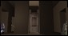
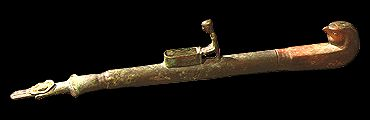

Incense burner

The ancient Egyptians believed that the smell of
incense
pleased the gods and goddesses. Burning incense was usually part of rituals which took place in the temple.
Back to the sanctuary...